Code
library(tidyverse)
library(easystats)
library(patchwork)
library(ggside)library(tidyverse)
library(easystats)
library(patchwork)
library(ggside)df <- read.csv("../data/rawdata_participants.csv") |>
mutate(across(everything(), ~ifelse(.x == "", NA, .x))) |>
mutate(Sample = case_when(
Language=="English" & Experimenter %in% c("2discord1", "Experimenter2", "Experimenter1") ~ "Students (Non-incentivized)",
Language=="English" & Experimenter %in% c("Unknown", "Readme (GitHub)", "website", "reddit") ~ "General Population",
Experimenter %in% c("enter", "macre", "piaca", "unime", "classroom1") ~ "Students (Non-incentivized)",
Experimenter %in% c("SONA") ~ "Students (Incentivized)",
Experimenter %in% c("gacon", "mafas", "marmar", "mavio", "sobon", "RISC", "Snowball") ~ "General Population",
str_detect(Experimenter, "reddit") ~ "General Population",
.default = Experimenter
))
dftask <- read.csv("../data/rawdata_task.csv") |>
full_join(
df[c("Participant", "Sex", "SexualOrientation")],
by = join_by(Participant)
)The initial sample consisted of 1067 participants (Mean age = 28.8, SD = 11.4, range: [18, 80], 9.4e-02% missing; Sex: 43.8% females, 54.8% males, 1.4% other; Education: Bachelor, 30.18%; Doctorate, 4.78%; High School, 44.80%; Master, 17.90%; Other, 1.97%; Primary School, 0.37%; Country: 34.86% UK, 16.59% Italy, 13.31% USA, 35.24% other).
# Create Sexual "relevance" variable (Relevant, irrelevant, non-erotic)
dftask <- dftask |>
mutate(Relevance = case_when(
Type == "Non-erotic" ~ "Non-erotic",
Sex == "Male" & SexualOrientation == "Heterosexual" & Category == "Female" ~ "Relevant",
Sex == "Female" & SexualOrientation == "Heterosexual" & Category == "Male" ~ "Relevant",
Sex == "Male" & SexualOrientation == "Homosexual" & Category == "Male" ~ "Relevant",
Sex == "Female" & SexualOrientation == "Homosexual" & Category == "Female" ~ "Relevant",
# TODO: what to do with "Other"?
SexualOrientation %in% c("Bisexual", "Other") & Category %in% c("Male", "Female") ~ "Relevant",
.default = "Irrelevant"
)) plot_recruitement <- function(df) {
# Consecutive count of participants per day (as area)
df |>
mutate(Date = as.Date(Date, format = "%d/%m/%Y")) |>
group_by(Date, Language, Sample) |>
summarize(N = n()) |>
ungroup() |>
# https://bocoup.com/blog/padding-time-series-with-r
complete(Date, Language, Sample, fill = list(N = 0)) |>
group_by(Language, Sample) |>
mutate(N = cumsum(N)) |>
ggplot(aes(x = Date, y = N)) +
geom_area(aes(fill=Sample)) +
scale_y_continuous(expand = c(0, 0)) +
labs(
title = "Recruitment History",
x = "Date",
y = "Total Number of Participants"
) +
see::theme_modern()
}
plot_recruitement(df) +
facet_wrap(~Language, nrow=5, scales = "free_y")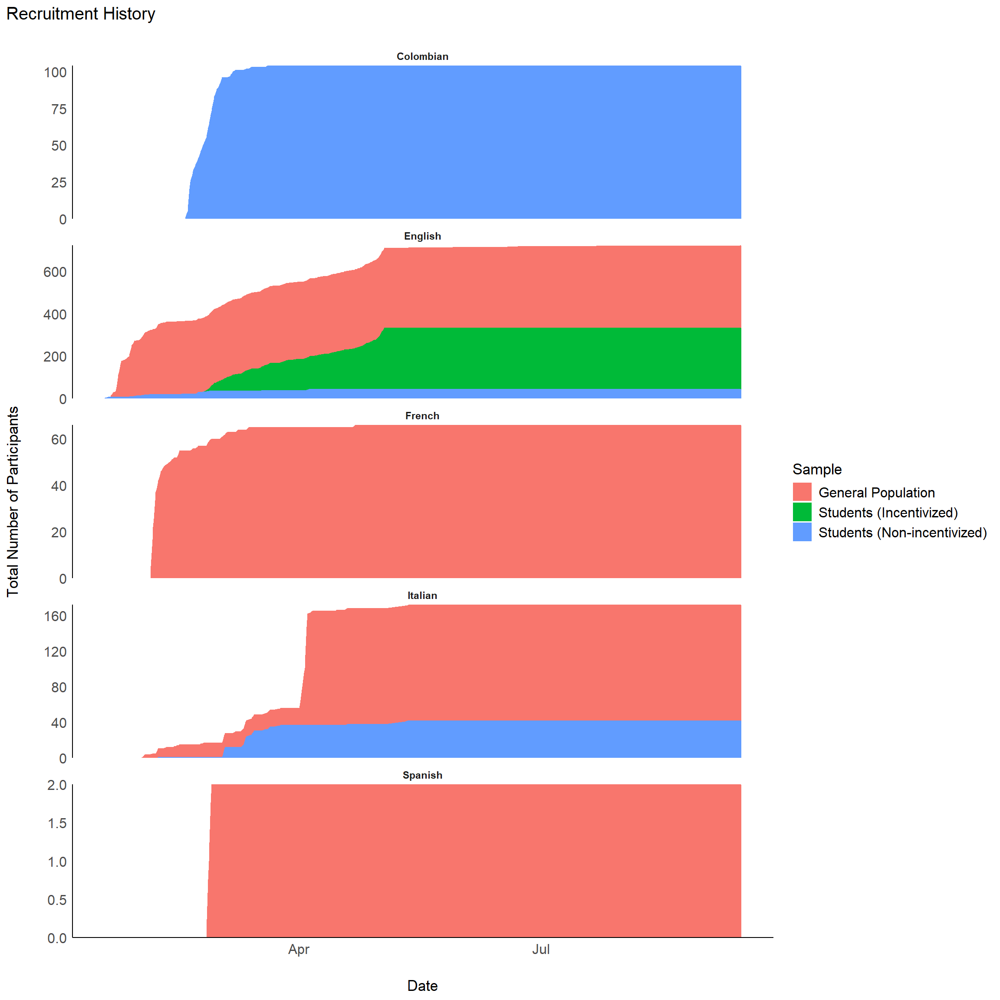
# Table
table_recruitment <- function(df) {
summarize(df, N = n(), .by=c("Language", "Experimenter")) |>
arrange(desc(N)) |>
gt::gt() |>
gt::opt_stylize() |>
gt::opt_interactive(use_compact_mode = TRUE) |>
gt::tab_header("Number of participants per recruitment source")
}
table_recruitment(df)plot_recruitement(filter(df, Language == "English"))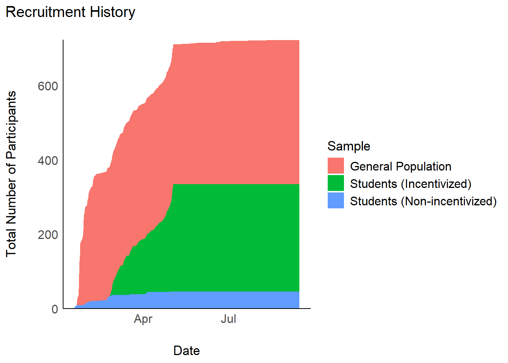
table_recruitment(filter(df, Language == "English"))plot_recruitement(filter(df, Language == "French"))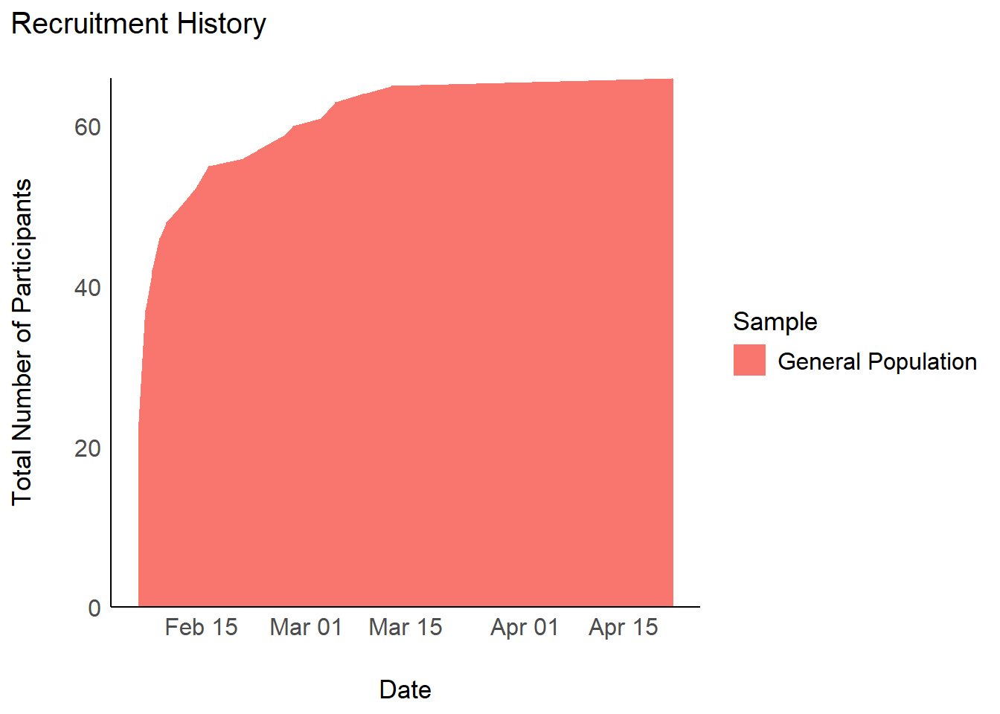
table_recruitment(filter(df, Language == "French"))plot_recruitement(filter(df, Language == "Italian"))table_recruitment(filter(df, Language == "Italian"))plot_recruitement(filter(df, Language == "Colombian"))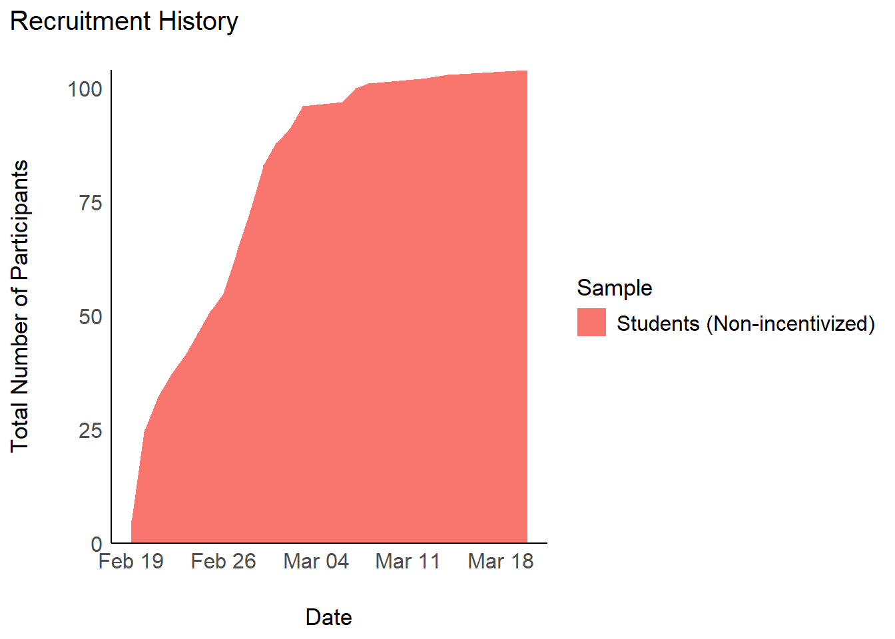
table_recruitment(filter(df, Language == "Colombian"))plot_recruitement(filter(df, Language == "Spanish"))table_recruitment(filter(df, Language == "Spanish"))The majority of participants found the study to be a fun experience. Interestingly, reports of fun were significantly associated with finding at least some stimuli arousing. Conversely, reporting no feelings was associated with finding the experiment boring.
df |>
select(starts_with("Feedback"), -Feedback_Comments) |>
pivot_longer(everything(), names_to = "Question", values_to = "Answer") |>
group_by(Question, Answer) |>
summarise(prop = n()/nrow(df), .groups = 'drop') |>
complete(Question, Answer, fill = list(prop = 0)) |>
filter(Answer == "True") |>
mutate(Question = str_remove(Question, "Feedback_"),
Question = str_replace(Question, "AILessArousing", "AI = Less arousing"),
Question = str_replace(Question, "AIMoreArousing", "AI = More arousing"),
Question = str_replace(Question, "CouldNotDiscriminate", "Hard to discriminate"),
Question = str_replace(Question, "LabelsIncorrect", "Labels were incorrect"),
Question = str_replace(Question, "NoFeels", "Didn't feel anything"),
Question = str_replace(Question, "CouldDiscriminate", "Easy to discriminate"),
Question = str_replace(Question, "LabelsReversed", "Labels were reversed")) |>
mutate(Question = fct_reorder(Question, desc(prop))) |>
ggplot(aes(x = Question, y = prop)) +
geom_bar(stat = "identity") +
scale_y_continuous(expand = c(0, 0), breaks= scales::pretty_breaks(), labels=scales::percent) +
labs(x="Feedback", y = "Participants", title = "Feedback") +
theme_minimal() +
theme(
plot.title = element_text(size = rel(1.2), face = "bold", hjust = 0),
plot.subtitle = element_text(size = rel(1.2), vjust = 7),
axis.text.y = element_text(size = rel(1.1)),
axis.text.x = element_text(size = rel(1.1), angle = 45, hjust = 1),
axis.title.x = element_blank()
)cor <- df |>
select(starts_with("Feedback"), -Feedback_Comments) |>
mutate_all(~ifelse(.=="True", 1, 0)) |>
correlation(method="tetrachoric", redundant = TRUE) |>
correlation::cor_sort() |>
correlation::cor_lower()
cor |>
mutate(val = paste0(insight::format_value(rho), format_p(p, stars_only=TRUE))) |>
mutate(Parameter2 = fct_rev(Parameter2)) |>
mutate(Parameter1 = fct_relabel(Parameter1, \(x) str_remove_all(x, "Feedback_")),
Parameter2 = fct_relabel(Parameter2, \(x) str_remove_all(x, "Feedback_"))) |>
ggplot(aes(x=Parameter1, y=Parameter2)) +
geom_tile(aes(fill = rho), color = "white") +
geom_text(aes(label = val), size = 3) +
labs(title = "Feedback Co-occurence Matrix") +
scale_fill_gradient2(
low = "#2196F3",
mid = "white",
high = "#F44336",
breaks = c(-1, 0, 1),
guide = guide_colourbar(ticks=FALSE),
midpoint = 0,
na.value = "grey85",
limit = c(-1, 1)) +
theme_minimal() +
theme(legend.title = element_blank(),
axis.title.x = element_blank(),
axis.title.y = element_blank(),
axis.text.x = element_text(angle = 45, hjust = 1))outliers <- list()df |>
ggplot(aes(x=Mobile, fill=Language)) +
geom_bar() +
geom_hline(yintercept=0.5*nrow(df), linetype="dashed") +
theme_modern()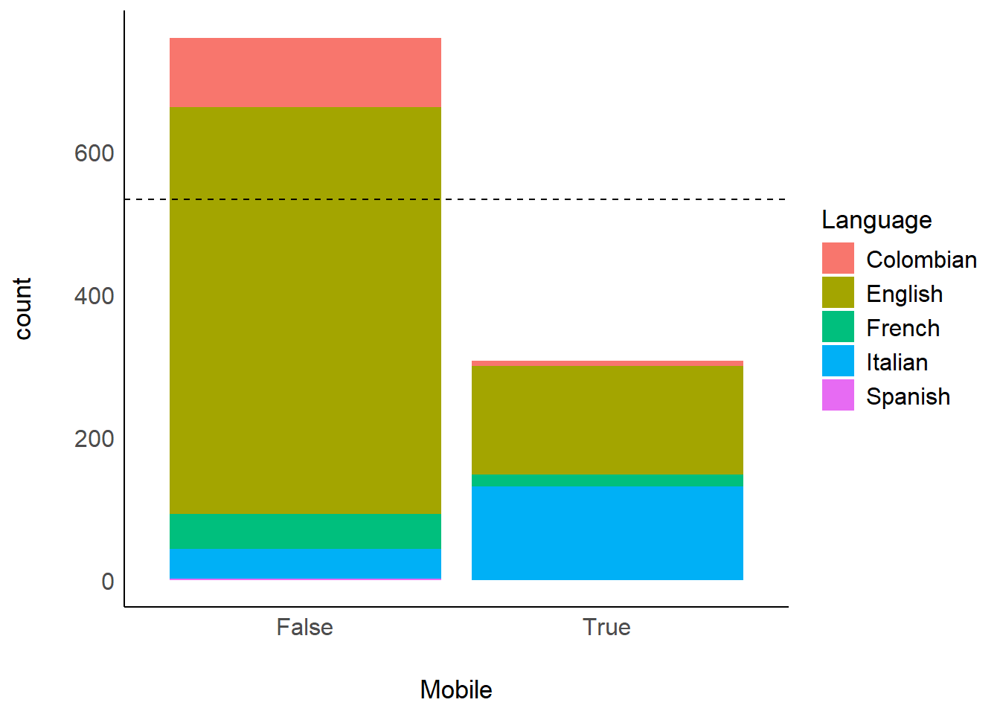
There were 307 participants that used a mobile device.
# df <- filter(df, Mobile == "False")
# dftask <- filter(dftask, Participant %in% df$Participant)The experiments median duration is 24.73 min (50% HDI [19.88, 27.62]).
df |>
mutate(Participant = fct_reorder(Participant, Experiment_Duration),
Category = ifelse(Experiment_Duration > 60, "extra", "ok"),
Duration = ifelse(Experiment_Duration > 60, 60, Experiment_Duration),
Group = ifelse(Participant %in% outliers, "Outlier", "ok")) |>
ggplot(aes(y = Participant, x = Duration)) +
geom_point(aes(color = Group, shape = Category)) +
geom_vline(xintercept = median(df$Experiment_Duration), color = "red", linetype = "dashed") +
geom_vline(xintercept = 15, color = "orange", linetype = "dotted") +
scale_shape_manual(values = c("extra" = 3, ok = 19)) +
scale_color_manual(values = c("Outlier" = "red", ok = "black"), guide="none") +
guides(color = "none", shape = "none") +
ggside::geom_xsidedensity(fill = "#4CAF50", color=NA) +
ggside::scale_xsidey_continuous(expand = c(0, 0)) +
labs(
title = "Experiment Completion Time",
x = "Duration (in minutes)",
y = "Participants"
) +
theme_modern() +
ggside::theme_ggside_void() +
theme(ggside.panel.scale = .3,
panel.border = element_blank(),
axis.text.y = element_blank(),
axis.ticks.y = element_blank())outliers$expe_duration <- filter(df, Experiment_Duration < 15)$Participantplot_hist <- function(dat) {
dens <- rbind(
mutate(bayestestR::estimate_density(filter(dftask, RT1 < 40 & RT2 < 40)$RT1),
Phase="Emotional ratings",
y = y / max(y)),
mutate(bayestestR::estimate_density(filter(dftask, RT1 < 40 & RT2 < 40)$RT2),
Phase="Reality rating",
y = y / max(y))
)
dat |>
filter(RT1 < 40 & RT2 < 40) |> # Remove very long RTs
# mutate(Participant = fct_reorder(Participant, RT1)) |>
pivot_longer(cols = c(RT1, RT2), names_to = "Phase", values_to = "RT") |>
mutate(Phase = ifelse(Phase == "RT1", "Emotional ratings", "Reality rating")) |>
ggplot(aes(x=RT)) +
geom_area(data=dens, aes(x=x, y=y, fill=Phase), alpha=0.33, position="identity") +
geom_density(aes(color=Phase, y=after_stat(scaled)), linewidth=1.5) +
scale_x_sqrt(breaks=c(0, 2, 5, 10, 20)) +
theme_minimal() +
theme(axis.title.y = element_blank(),
axis.ticks.y = element_blank(),
axis.text.y = element_blank(),
axis.line.y = element_blank()) +
labs(title = "Distribution of Response Time for each Participant", x="Response time per stimuli (s)") +
facet_wrap(~Participant, ncol=5, scales="free_y") +
coord_cartesian(xlim = c(0, 25))
}df |>
mutate(Participant = fct_reorder(Participant, BAIT_Duration),
Category = ifelse(BAIT_Duration > 5, "extra", "ok"),
Duration = ifelse(BAIT_Duration > 5, 5, BAIT_Duration),
Group = ifelse(Participant %in% outliers, "Outlier", "ok")) |>
ggplot(aes(y = Participant, x = Duration)) +
geom_point(aes(color = Group, shape = Category)) +
geom_vline(xintercept = median(df$BAIT_Duration), color = "red", linetype = "dashed") +
geom_vline(xintercept = 0.5, color = "orange", linetype = "dotted") +
scale_shape_manual(values = c("extra" = 3, ok = 19)) +
scale_color_manual(values = c("Outlier" = "red", ok = "black"), guide="none") +
guides(color = "none", shape = "none") +
ggside::geom_xsidedensity(fill = "#9C27B0", color=NA) +
ggside::scale_xsidey_continuous(expand = c(0, 0)) +
labs(
title = "Questionnaire Completion Time",
x = "Duration (in minutes)",
y = "Participant"
) +
theme_modern() +
ggside::theme_ggside_void() +
theme(ggside.panel.scale = .3,
panel.border = element_blank(),
axis.ticks.y = element_blank(),
axis.text.y = element_blank()) 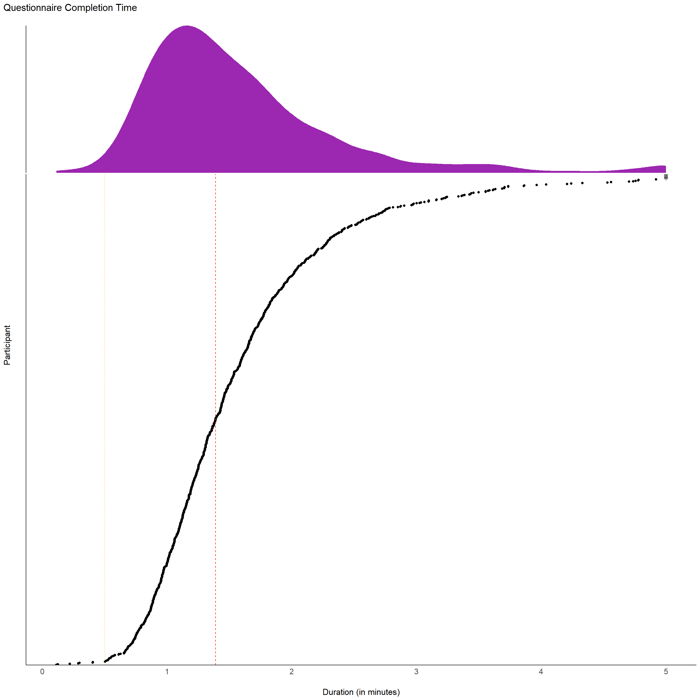
outliers$bait_duration <- filter(df, BAIT_Duration < 0.5)$Participant
df[df$Participant %in% outliers$bait_duration, str_detect(names(df), "BAIT_\\d+")] <- NAWe excluded the BAIT data of 7 participants who completed the questionnaire in less than 30 seconds.
# Single arousal response (0)
outliers$novariability <- summarize(dftask, n = length(unique(Arousal)), .by="Participant") |>
filter(n == 1) |>
select(Participant) |>
pull()
df <- filter(df, !Participant %in% outliers$novariability)
dftask <- filter(dftask, !Participant %in% outliers$novariability)We removed 8 that showed no variation in their arousal response (did not move the scales).
dat <- dftask |>
filter(Relevance %in% c("Relevant", "Non-erotic")) |>
group_by(Participant, Type) |>
summarise(Arousal = mean(Arousal),
Valence = mean(Valence),
Enticement = mean(Enticement),
.groups = "drop") |>
pivot_wider(names_from = Type, values_from = all_of(c("Arousal", "Valence", "Enticement"))) |>
transmute(Participant = Participant,
Arousal = Arousal_Erotic - `Arousal_Non-erotic`,
Valence = Valence_Erotic - `Valence_Non-erotic`,
Enticement = Enticement_Erotic - `Enticement_Non-erotic`) |>
filter(!is.na(Arousal)) |>
mutate(Participant = fct_reorder(Participant, Arousal))
dat |>
pivot_longer(-Participant) |>
mutate(Group = ifelse(Participant %in% outliers, "Outlier", "ok")) |>
ggplot(aes(x=value, y=Participant, fill=Group)) +
geom_bar(aes(fill=value), stat = "identity") +
scale_fill_gradient2(low = "#3F51B5", mid = "#FF9800", high = "#4CAF50", midpoint = 0) +
# scale_fill_manual(values = c("Outlier" = "red", ok = "black"), guide="none") +
theme_bw() +
theme(axis.text.y = element_blank(),
axis.ticks.y = element_blank()) +
labs(title = "Difference between Erotic and Neutral", x="Erotic - Neutral") +
facet_wrap(~name, ncol=3, scales="free_x")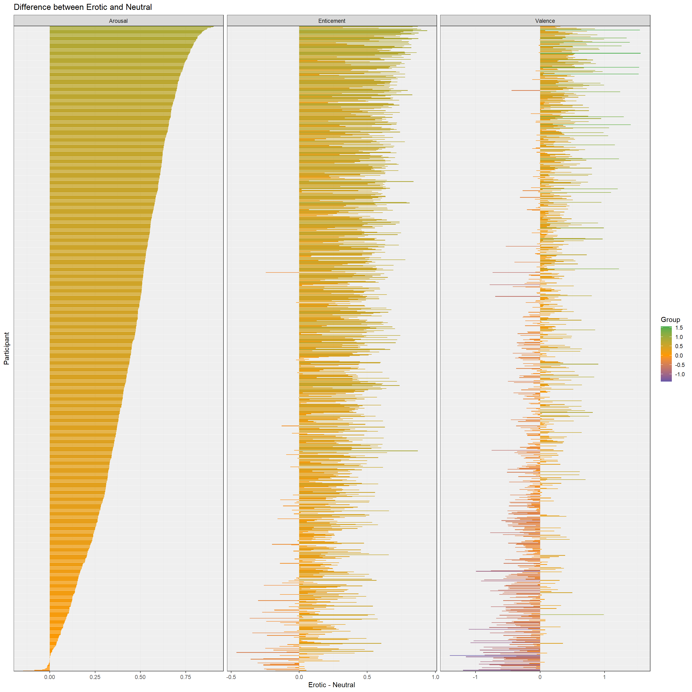
outliers$emo_diff <- sort(as.character(dat[dat$Arousal < 0, ]$Participant))dat <- dftask |>
filter(!Participant %in% outliers) |>
summarize(cor_ArVal = cor(Arousal, Valence),
cor_ArEnt = cor(Arousal, Enticement),
.by="Participant")
dat |>
left_join(df[c("Participant", "Language")], by="Participant") |>
mutate(Participant = fct_reorder(Participant, cor_ArVal)) |>
pivot_longer(starts_with("cor_")) |>
mutate(Group = ifelse(Participant %in% outliers, "Outlier", "ok")) |>
mutate(name = fct_relevel(name, "cor_ArVal", "cor_ArEnt"),
name = fct_recode(name, "Arousal - Valence" = "cor_ArVal", "Arousal - Enticement" = "cor_ArEnt")) |>
ggplot(aes(y = Participant, x = value)) +
geom_bar(aes(fill = Language), stat = "identity") +
# scale_fill_gradient2(low = "#3F51B5", mid = "#FF9800", high = "#4CAF50", midpoint = 0) +
# scale_fill_manual(values = c("Outlier" = "red", ok = "black"), guide="none") +
theme_bw() +
theme(axis.text.y = element_blank(),
axis.ticks.y = element_blank()) +
labs(title = "Difference between Erotic and Neutral", x="Erotic - Neutral") +
facet_wrap(~name, ncol=3, scales="free_x")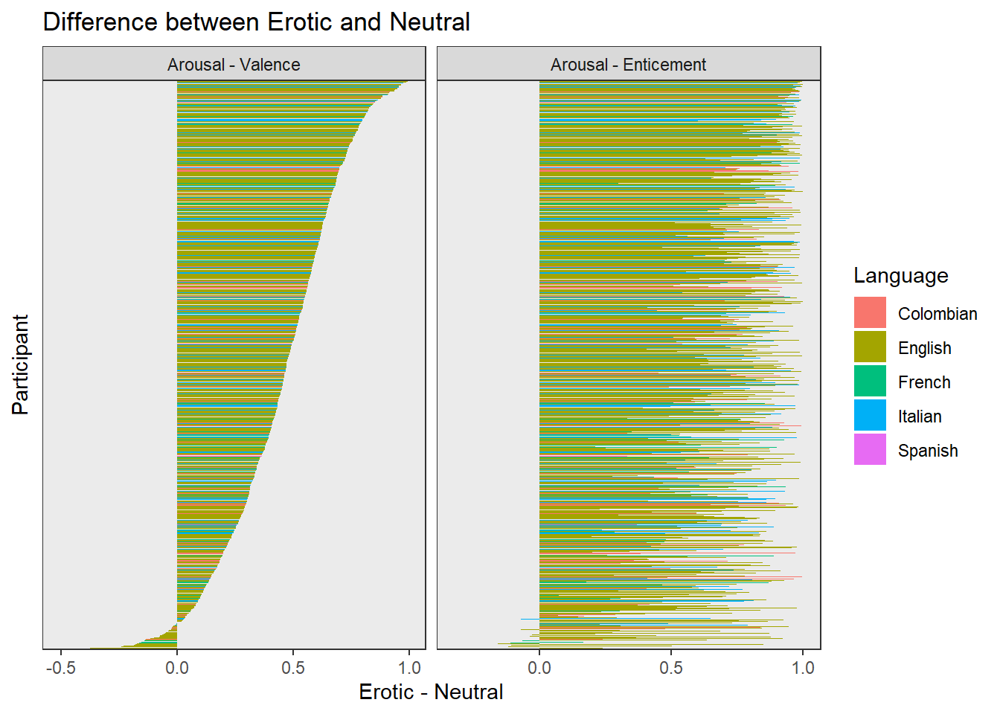
outliers$emo_cor <- sort(as.character(dat[dat$cor_ArEnt < 0, ]$Participant))
outliers$arousal <- intersect(outliers$emo_diff, outliers$emo_cor)We removed 4 participants that had a negative correlation between arousal and enticement, and had a negative arousal difference between erotic and neutral (suggesting a misunderstanding of the scale direction).
df <- filter(df, !Participant %in% outliers$arousal)
dftask <- filter(dftask, !Participant %in% outliers$arousal)df |>
ggplot(aes(x = Sex)) +
geom_bar(aes(fill = SexualOrientation)) +
scale_y_continuous(expand = c(0, 0), breaks = scales::pretty_breaks()) +
scale_fill_metro_d() +
labs(x = "Biological Sex", y = "Number of Participants", title = "Sex and Sexual Orientation", fill = "Sexual Orientation") +
theme_modern(axis.title.space = 15) +
theme(
plot.title = element_text(size = rel(1.2), face = "bold", hjust = 0),
plot.subtitle = element_text(size = rel(1.2), vjust = 7),
axis.text.y = element_text(size = rel(1.1)),
axis.text.x = element_text(size = rel(1.1)),
axis.title.x = element_blank()
)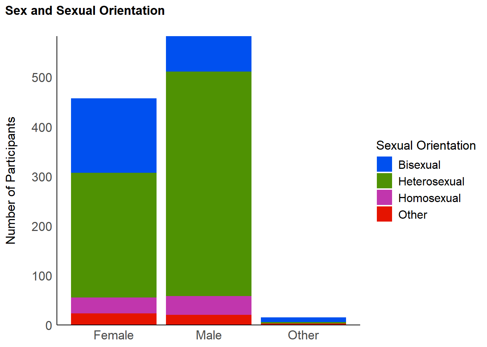
We removed 58 participants that were incompatible with further analysis.
df <- filter(df, !(Sex == "Other" | SexualOrientation == "Other"))
dftask <- filter(dftask, Participant %in% df$Participant)show_distribution <- function(dftask, target="Arousal") {
dftask |>
filter(SexualOrientation %in% c("Heterosexual", "Bisexual", "Homosexual")) |>
bayestestR::estimate_density(select=target,
at=c("Relevance", "Category", "Sex", "SexualOrientation"),
by = c("Relevance", "Category", "Sex", "SexualOrientation"),
method="KernSmooth") |>
ggplot(aes(x = x, y = y)) +
geom_line(aes(color = Relevance, linetype = Category), linewidth=1) +
facet_grid(SexualOrientation~Sex, scales="free_y") +
scale_color_manual(values = c("Relevant" = "red", "Non-erotic" = "blue", "Irrelevant"="darkorange")) +
scale_y_continuous(expand = c(0, 0)) +
scale_x_continuous(expand = c(0, 0)) +
theme_minimal() +
theme(axis.title.x = element_blank(),
axis.title.y = element_blank(),
axis.text.y = element_blank(),
plot.title = element_text(face="bold")) +
labs(title = target)
}
(show_distribution(dftask, "Arousal") | show_distribution(dftask, "Valence")) /
(show_distribution(dftask, "Enticement") | show_distribution(dftask, "Realness")) +
patchwork::plot_layout(guides = "collect") +
patchwork::plot_annotation(title = "Distribution of Appraisals depending on the Sexual Profile",
theme = theme(plot.title = element_text(hjust = 0.5, face="bold"))) We kept only heterosexual participants (70.71%).
df <- filter(df, SexualOrientation == "Heterosexual")
dftask <- filter(dftask, Participant %in% df$Participant)The final sample includes 705 participants (Mean age = 30.2, SD = 11.8, range: [18, 80], 0.1% missing; Sex: 35.7% females, 64.3% males, 0.0% other; Education: Bachelor, 30.07%; Doctorate, 5.53%; High School, 41.13%; Master, 21.28%; Other, 1.56%; Primary School, 0.43%; Country: 28.23% UK, 18.72% Italy, 14.33% USA, 11.06% Colombia, 27.66% other).
p_country <- dplyr::select(df, region = Country) |>
group_by(region) |>
summarize(n = n()) |>
right_join(map_data("world"), by = "region") |>
ggplot(aes(long, lat, group = group)) +
geom_polygon(aes(fill = n)) +
scale_fill_gradientn(colors = c("#FFEB3B", "red", "purple")) +
labs(fill = "N") +
theme_void() +
labs(title = "A Geographically Diverse Sample", subtitle = "Number of participants by country") +
theme(
plot.title = element_text(size = rel(1.2), face = "bold", hjust = 0),
plot.subtitle = element_text(size = rel(1.2))
)
p_countryggwaffle::waffle_iron(df, ggwaffle::aes_d(group = Ethnicity), rows=10) |>
ggplot(aes(x, y, fill = group)) +
ggwaffle::geom_waffle() +
coord_equal() +
scale_fill_flat_d() +
ggwaffle::theme_waffle() +
labs(title = "Self-reported Ethnicity", subtitle = "Each square represents a participant", fill="") +
theme(
plot.title = element_text(size = rel(1.2), face = "bold", hjust = 0),
plot.subtitle = element_text(size = rel(1.2)),
axis.title.x = element_blank(),
axis.title.y = element_blank()
)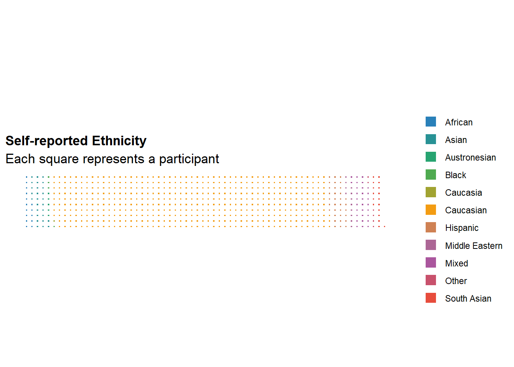
p_age <- estimate_density(df$Age) |>
normalize(select = y) |>
mutate(y = y * 86) |> # To match the binwidth
ggplot(aes(x = x)) +
geom_histogram(data=df, aes(x = Age), fill = "#616161", bins=28) +
# geom_line(aes(y = y), color = "orange", linewidth=2) +
geom_vline(xintercept = mean(df$Age), color = "red", linewidth=1.5) +
# geom_label(data = data.frame(x = mean(df$Age) * 1.15, y = 0.95 * 75), aes(y = y), color = "red", label = paste0("Mean = ", format_value(mean(df$Age)))) +
scale_x_continuous(expand = c(0, 0)) +
scale_y_continuous(expand = c(0, 0)) +
labs(title = "Age", y = "Number of Participants", color = NULL, subtitle = "Distribution of participants' age") +
theme_modern(axis.title.space = 10) +
theme(
plot.title = element_text(size = rel(1.2), face = "bold", hjust = 0),
plot.subtitle = element_text(size = rel(1.2), vjust = 7),
axis.text.y = element_text(size = rel(1.1)),
axis.text.x = element_text(size = rel(1.1)),
axis.title.x = element_blank()
)
p_ageWarning: Removed 1 row containing non-finite outside the scale range
(`stat_bin()`).Warning: Removed 1 row containing missing values or values outside the scale range
(`geom_vline()`).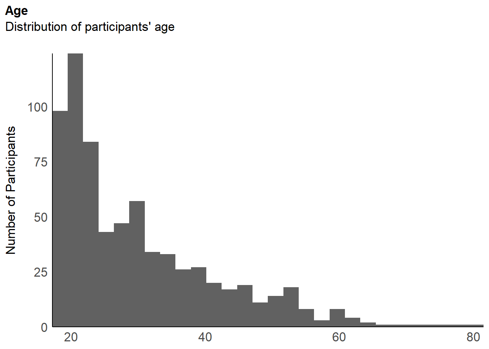
p_edu <- df |>
mutate(Education = fct_relevel(Education, "Other", "Primary School", "High School", "Bachelor", "Master", "Doctorate")) |>
ggplot(aes(x = Education)) +
geom_bar(aes(fill = Education)) +
scale_y_continuous(expand = c(0, 0), breaks= scales::pretty_breaks()) +
scale_fill_viridis_d(guide = "none") +
labs(title = "Education", y = "Number of Participants", subtitle = "Participants per achieved education level") +
theme_modern(axis.title.space = 15) +
theme(
plot.title = element_text(size = rel(1.2), face = "bold", hjust = 0),
plot.subtitle = element_text(size = rel(1.2), vjust = 7),
axis.text.y = element_text(size = rel(1.1)),
axis.text.x = element_text(size = rel(1.1)),
axis.title.x = element_blank()
)
p_educolors <- c(
"NA" = "#2196F3", "None" = "#E91E63", "Condoms (for partner)" = "#9C27B0",
"Combined pills" = "#FF9800", "Intrauterine Device (IUD)" = "#FF5722",
"Intrauterine System (IUS)" = "#795548", "Progestogen pills" = "#4CAF50",
"Other" = "#FFC107", "Condoms (female)" = "#607D8B"
)
colors <- colors[names(colors) %in% c("NA", df$BirthControl)]
p_sex <- df |>
mutate(BirthControl = ifelse(Sex == "Male", "NA", BirthControl),
BirthControl = fct_relevel(BirthControl, names(colors))) |>
ggplot(aes(x = Sex)) +
geom_bar(aes(fill = BirthControl)) +
scale_y_continuous(expand = c(0, 0), breaks = scales::pretty_breaks()) +
scale_fill_manual(
values = colors,
breaks = names(colors)[2:length(colors)]
) +
labs(x = "Biological Sex", y = "Number of Participants", title = "Sex and Birth Control Method", fill = "Birth Control") +
theme_modern(axis.title.space = 15) +
theme(
plot.title = element_text(size = rel(1.2), face = "bold", hjust = 0),
plot.subtitle = element_text(size = rel(1.2), vjust = 7),
axis.text.y = element_text(size = rel(1.1)),
axis.text.x = element_text(size = rel(1.1)),
axis.title.x = element_blank()
)
p_sex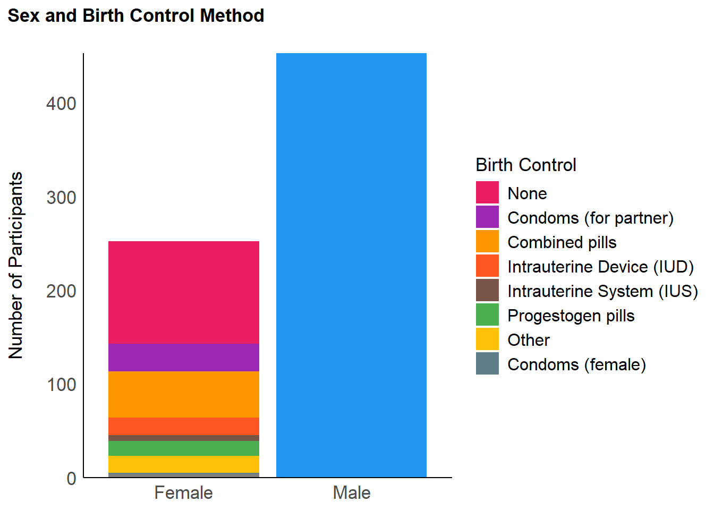
p_sexprofile <- df |>
select(Participant, Sex, SexualOrientation, SexualActivity, COPS_Duration_1, COPS_Frequency_2) |>
pivot_longer(-all_of(c("Participant", "Sex"))) |>
mutate(name = str_replace_all(name, "SexualOrientation", "Sexual Orientation"),
name = str_replace_all(name, "SexualActivity", "Sexual Activity"),
name = str_replace_all(name, "COPS_Duration_1", "Pornography Usage (Duration)"),
name = str_replace_all(name, "COPS_Frequency_2", "Pornography Usage (Frequency)")) |>
ggplot(aes(x = value, fill=Sex)) +
geom_bar() +
scale_y_continuous(expand = c(0, 0), breaks= scales::pretty_breaks()) +
scale_fill_manual(values = c("Male"= "#64B5F6", "Female"= "#F06292")) +
labs(title = "Sexual Profile of Participants") +
theme_modern(axis.title.space = 15) +
theme(
plot.title = element_text(size = rel(1.2), face = "bold", hjust = 0),
plot.subtitle = element_text(size = rel(1.2), vjust = 7),
axis.text.y = element_text(size = rel(1.1)),
axis.text.x = element_text(size = rel(1.1), angle = 45, hjust = 1),
axis.title.x = element_blank(),
axis.title.y = element_blank()
) +
facet_wrap(~name, scales = "free")
p_sexprofiledat <- select(df, COPS_Duration_1, COPS_Frequency_2, SexualActivity) |>
mutate(across(where(is.character), as.factor)) |>
mutate(across(where(is.factor), as.numeric))
r <- correlation::correlation(
dat) |>
as.matrix()
r <- parameters::factor_analysis(dat, n = 1, rotation = "oblimin", cor = r)
df$Porn <- get_scores(r)[, 1]p_language <- df |>
ggplot(aes(x = Language_Level)) +
geom_bar() +
scale_y_continuous(expand = c(0, 0), breaks= scales::pretty_breaks()) +
labs(x = "Level", y = "Number of Participants", title = "Language Level") +
theme_modern(axis.title.space = 15) +
theme(
plot.title = element_text(size = rel(1.2), face = "bold", hjust = 0),
plot.subtitle = element_text(size = rel(1.2), vjust = 7),
axis.text.y = element_text(size = rel(1.1)),
axis.text.x = element_text(size = rel(1.1))
)
p_expertise <- df |>
ggplot(aes(x = AI_Knowledge)) +
geom_bar() +
scale_y_continuous(expand = c(0, 0), breaks= scales::pretty_breaks()) +
labs(x = "Level", y = "Number of Participants", title = "AI-Expertise") +
theme_modern(axis.title.space = 15) +
theme(
plot.title = element_text(size = rel(1.2), face = "bold", hjust = 0),
plot.subtitle = element_text(size = rel(1.2), vjust = 7),
axis.text.y = element_text(size = rel(1.1)),
axis.text.x = element_text(size = rel(1.1))
)
p_language | p_expertise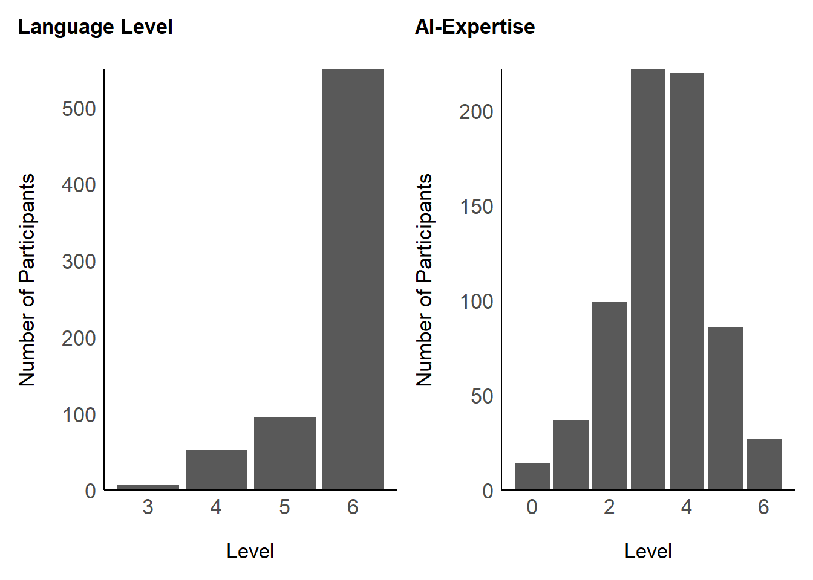
df$Screen_Size <- sqrt(df$Screen_Width * df$Screen_Height)
df |>
ggplot(aes(x = Screen_Size, fill=Mobile)) +
geom_histogram(bins = 50, color="black") +
scale_y_continuous(expand = c(0, 0), breaks= scales::pretty_breaks()) +
labs(x = expression("Screen Size ("~sqrt(Number~of~Pixels)~")"), y = "Number of Participants", title = "Screen Size") +
theme_modern(axis.title.space = 15) +
theme(
plot.title = element_text(size = rel(1.2), face = "bold", hjust = 0),
plot.subtitle = element_text(size = rel(1.2), vjust = 7),
axis.text.y = element_text(size = rel(1.1)),
axis.text.x = element_text(size = rel(1.1))
)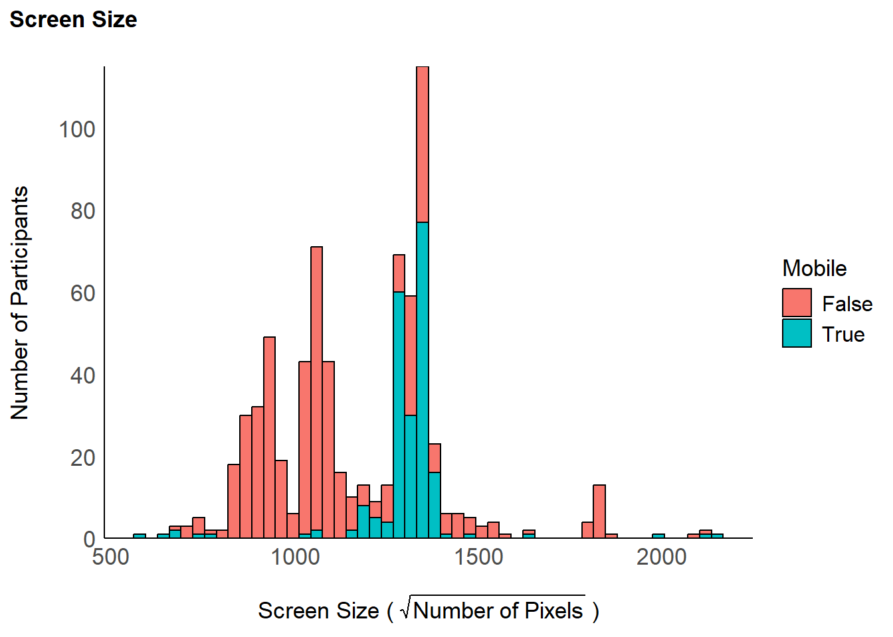
p_country /
(p_age + p_edu)Warning: Removed 1 row containing non-finite outside the scale range
(`stat_bin()`).Warning: Removed 1 row containing missing values or values outside the scale range
(`geom_vline()`).This section pertains to the validation of the BAIT scale measuring beliefs and expectations about artificial creations.
bait <- df |>
select(starts_with("BAIT_"), -BAIT_Duration) |>
rename_with(function(x) gsub("BAIT_\\d_", "", x)) |>
filter(!is.na(TextRealistic ))
cor <- correlation::correlation(bait, redundant = TRUE) |>
correlation::cor_sort() |>
correlation::cor_lower()
clean_labels <- function(x) {
x <- str_remove_all(x, "BAIT_") |>
str_replace_all("_", " - ")
}
cor |>
mutate(val = paste0(insight::format_value(r), format_p(p, stars_only=TRUE))) |>
mutate(Parameter2 = fct_rev(Parameter2)) |>
mutate(Parameter1 = fct_relabel(Parameter1, clean_labels),
Parameter2 = fct_relabel(Parameter2, clean_labels)) |>
ggplot(aes(x=Parameter1, y=Parameter2)) +
geom_tile(aes(fill = r), color = "white") +
geom_text(aes(label = val), size = 3) +
labs(title = "Correlation Matrix",
subtitle = "Beliefs about Artificial Information Technology (BAIT)") +
scale_fill_gradient2(
low = "#2196F3",
mid = "white",
high = "#F44336",
breaks = c(-1, 0, 1),
guide = guide_colourbar(ticks=FALSE),
midpoint = 0,
na.value = "grey85",
limit = c(-1, 1)) +
theme_minimal() +
theme(legend.title = element_blank(),
axis.title.x = element_blank(),
axis.title.y = element_blank(),
axis.text.x = element_text(angle = 45, hjust = 1))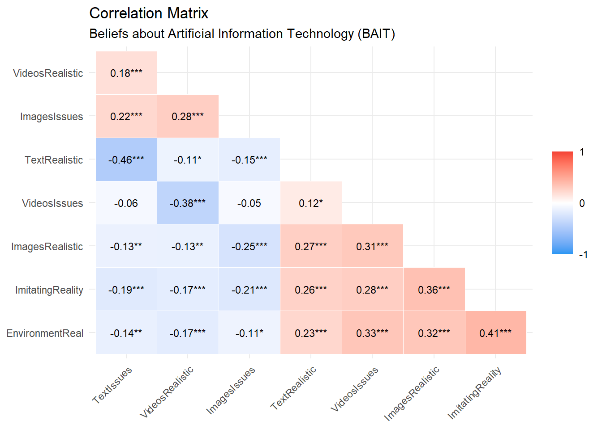
n <- parameters::n_factors(bait, package = "nFactors")
plot(n)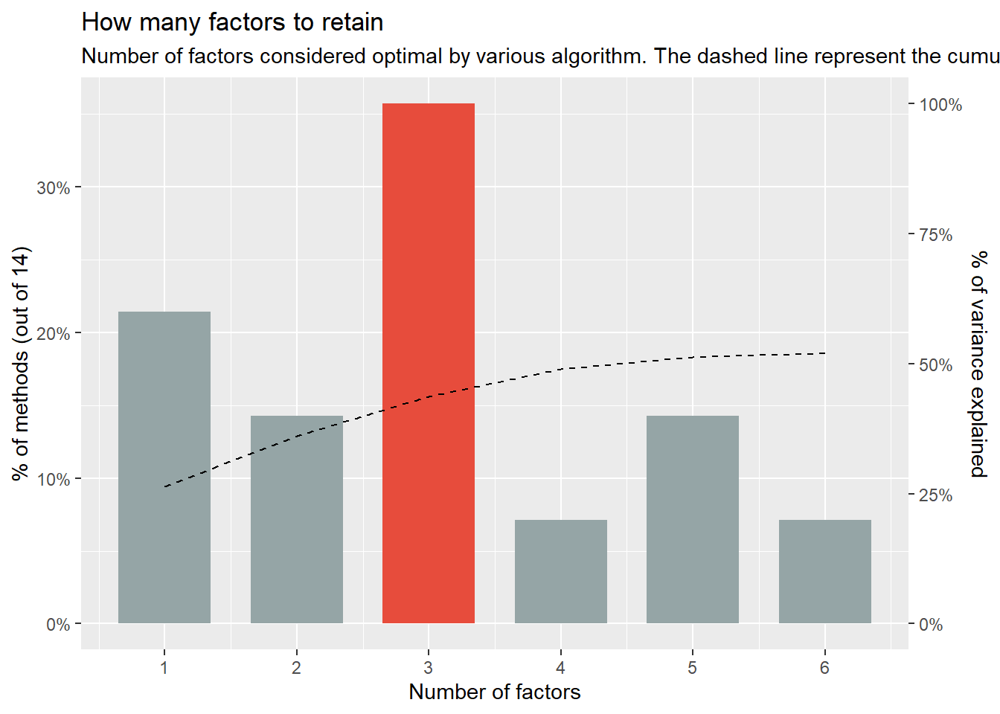
efa <- parameters::factor_analysis(bait, cor=cor(bait, use="pairwise.complete.obs"), n=3, rotation = "oblimin",
sort=TRUE, scores="tenBerge", fm="ml")
plot(efa)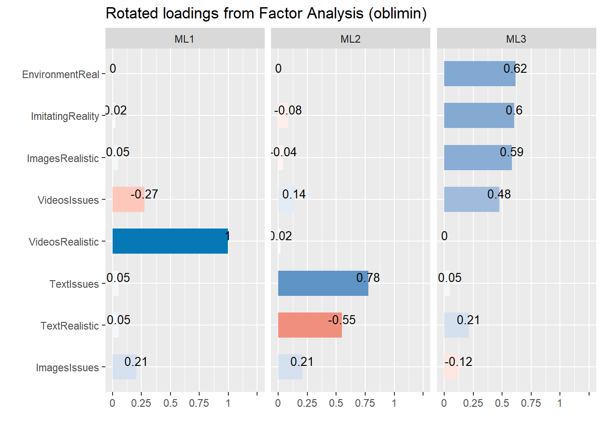
display(efa)| Variable | ML3 | ML1 | ML2 | Complexity | Uniqueness |
|---|---|---|---|---|---|
| EnvironmentReal | 0.62 | 4.68e-03 | 1.11e-03 | 1.00 | 0.62 |
| ImitatingReality | 0.60 | 0.02 | -0.08 | 1.04 | 0.60 |
| ImagesRealistic | 0.59 | 0.05 | -0.04 | 1.02 | 0.65 |
| VideosIssues | 0.48 | -0.27 | 0.14 | 1.80 | 0.66 |
| VideosRealistic | 2.32e-03 | 1.00 | 0.02 | 1.00 | 5.00e-03 |
| TextIssues | 0.05 | 0.05 | 0.78 | 1.02 | 0.41 |
| TextRealistic | 0.21 | 0.05 | -0.55 | 1.32 | 0.59 |
| ImagesIssues | -0.12 | 0.21 | 0.21 | 2.60 | 0.85 |
The 3 latent factors (oblimin rotation) accounted for 45.12% of the total variance of the original data (ML3 = 18.04%, ML1 = 14.37%, ML2 = 12.71%).
m1 <- lavaan::cfa(
"G =~ ImitatingReality + EnvironmentReal + VideosIssues + TextIssues + VideosRealistic + ImagesRealistic + ImagesIssues + TextRealistic",
data=bait)
m2 <- lavaan::cfa(
"Images =~ ImitatingReality + EnvironmentReal + ImagesRealistic + ImagesIssues + VideosIssues + VideosRealistic
Text =~ TextIssues + TextRealistic",
data=bait)
m3 <- lavaan::cfa(
"Images =~ ImitatingReality + EnvironmentReal + ImagesRealistic + ImagesIssues
Videos =~ VideosIssues + VideosRealistic
Text =~ TextIssues + TextRealistic",
data=bait)
m4 <- lavaan::cfa(
"Environment =~ ImitatingReality + EnvironmentReal
Images =~ ImagesRealistic + ImagesIssues
Videos =~ VideosIssues + VideosRealistic
Text =~ TextIssues + TextRealistic",
data=bait)
m5 <- lavaan::cfa(efa_to_cfa(efa, threshold="max"), data=bait)
# bayestestR::bayesfactor_models(m1, m2)
lavaan::anova(m1, m2, m3, m4, m5)Warning: lavaan->lavTestLRT():
Some restricted models fit better than less restricted models; either
these models are not nested, or the less restricted model failed to reach
a global optimum.Smallest difference = -9.88712761087882.
Chi-Squared Difference Test
Df AIC BIC Chisq Chisq diff RMSEA Df diff Pr(>Chisq)
m4 14 -466.77 -366.71 108.46
m3 17 -459.79 -373.37 121.44 12.981 0.06904 3 0.004678 **
m5 18 -394.44 -312.58 188.78 67.344 0.30830 1 2.281e-16 ***
m2 19 -406.33 -329.01 178.90 -9.887 0.00000 1 1.000000
m1 20 -296.74 -223.96 290.49 111.597 0.39805 1 < 2.2e-16 ***
---
Signif. codes: 0 '***' 0.001 '**' 0.01 '*' 0.05 '.' 0.1 ' ' 1display(parameters::parameters(m4, standardize = TRUE))| Link | Coefficient | SE | 95% CI | z | p |
|---|---|---|---|---|---|
| Environment =~ ImitatingReality | 0.66 | 0.04 | (0.59, 0.73) | 18.31 | < .001 |
| Environment =~ EnvironmentReal | 0.63 | 0.04 | (0.56, 0.70) | 17.45 | < .001 |
| Images =~ ImagesRealistic | 0.72 | 0.06 | (0.60, 0.84) | 11.85 | < .001 |
| Images =~ ImagesIssues | -0.35 | 0.04 | (-0.44, -0.26) | -8.03 | < .001 |
| Videos =~ VideosIssues | 0.82 | 0.06 | (0.70, 0.94) | 13.36 | < .001 |
| Videos =~ VideosRealistic | -0.47 | 0.05 | (-0.56, -0.38) | -10.35 | < .001 |
| Text =~ TextIssues | 0.54 | 0.05 | (0.45, 0.64) | 11.30 | < .001 |
| Text =~ TextRealistic | -0.85 | 0.06 | (-0.98, -0.73) | -13.40 | < .001 |
| Link | Coefficient | SE | 95% CI | z | p |
|---|---|---|---|---|---|
| Environment ~~ Images | 0.73 | 0.07 | (0.59, 0.87) | 10.21 | < .001 |
| Environment ~~ Videos | 0.57 | 0.06 | (0.46, 0.69) | 9.66 | < .001 |
| Environment ~~ Text | -0.45 | 0.06 | (-0.56, -0.34) | -7.97 | < .001 |
| Images ~~ Videos | 0.49 | 0.07 | (0.36, 0.63) | 7.22 | < .001 |
| Images ~~ Text | -0.45 | 0.06 | (-0.58, -0.32) | -6.94 | < .001 |
| Videos ~~ Text | -0.18 | 0.05 | (-0.29, -0.08) | -3.46 | < .001 |
m4b <- lavaan::sem(
"Environment =~ ImitatingReality + EnvironmentReal
Images =~ ImagesRealistic + ImagesIssues
Videos =~ VideosIssues + VideosRealistic
Text =~ TextIssues + TextRealistic
G =~ Environment + Images + Videos + Text",
data=bait)
m4c <- lavaan::sem(
"Environment =~ ImitatingReality + EnvironmentReal
Images =~ ImagesRealistic + ImagesIssues
Videos =~ VideosIssues + VideosRealistic
Text =~ TextIssues + TextRealistic
Visual =~ Environment + Images",
data=bait)
# bayestestR::bayesfactor_models(m1, m2)
lavaan::anova(m4, m4b, m4c)
Chi-Squared Difference Test
Df AIC BIC Chisq Chisq diff RMSEA Df diff Pr(>Chisq)
m4 14 -466.77 -366.71 108.46
m4c 15 -468.04 -372.53 109.18 0.726 0.000000 1 0.39419
m4b 16 -462.23 -371.27 117.00 7.812 0.098789 1 0.00519 **
---
Signif. codes: 0 '***' 0.001 '**' 0.01 '*' 0.05 '.' 0.1 ' ' 1display(parameters::parameters(m4c, standardize = TRUE))| Link | Coefficient | SE | 95% CI | z | p |
|---|---|---|---|---|---|
| Environment =~ ImitatingReality | 0.66 | 0.04 | (0.59, 0.73) | 18.33 | < .001 |
| Environment =~ EnvironmentReal | 0.63 | 0.04 | (0.55, 0.70) | 17.39 | < .001 |
| Images =~ ImagesRealistic | 0.73 | 0.06 | (0.60, 0.85) | 11.78 | < .001 |
| Images =~ ImagesIssues | -0.35 | 0.04 | (-0.43, -0.26) | -7.96 | < .001 |
| Videos =~ VideosIssues | 0.82 | 0.06 | (0.70, 0.94) | 13.34 | < .001 |
| Videos =~ VideosRealistic | -0.47 | 0.05 | (-0.56, -0.38) | -10.34 | < .001 |
| Text =~ TextIssues | 0.55 | 0.05 | (0.45, 0.64) | 11.33 | < .001 |
| Text =~ TextRealistic | -0.85 | 0.06 | (-0.98, -0.73) | -13.41 | < .001 |
| Visual =~ Environment | 0.89 | 0.05 | (0.79, 0.99) | 17.80 | < .001 |
| Visual =~ Images | 0.81 | 0.07 | (0.67, 0.96) | 11.28 | < .001 |
| Link | Coefficient | SE | 95% CI | z | p |
|---|---|---|---|---|---|
| Videos ~~ Text | -0.18 | 0.05 | (-0.29, -0.08) | -3.47 | < .001 |
| Videos ~~ Visual | 0.63 | 0.06 | (0.51, 0.74) | 10.52 | < .001 |
| Text ~~ Visual | -0.52 | 0.06 | (-0.63, -0.41) | -9.29 | < .001 |
library(ggraph)
library(tidySEM)
edges <- tidySEM::get_edges(m4c) |>
mutate(sign = as.factor(sign(as.numeric(est_std))))
tidygraph::tbl_graph(nodes = tidySEM::get_nodes(m4c), edges = edges) |>
ggraph(layout = 'kk') +
geom_edge_link(aes(filter=op=="=~", label=est_std, color=sign),
angle_calc="along",
label_dodge=unit(-0.015, "npc"),
edge_width=1) +
geom_edge_arc(aes(filter=op=="~~", label=est_std, color=sign),
linetype="dashed", strength=0.1,
angle_calc="along",
label_dodge=unit(-0.015, "npc"),
edge_width=1) +
geom_node_point(aes(shape=shape, color=shape), size=14, alpha=0.3) +
geom_node_text(aes(label = name)) +
scale_edge_color_manual(values=c("1"="darkgreen", "-1"="red"), guide="none") +
scale_shape_manual(values=c("oval"="circle", "rect"="square"), guide="none") +
scale_color_manual(values=c("oval"="orange", "rect"="black"), guide="none") +
theme_void()Exploratory Graph Analysis (EGA) is a recently developed framework for psychometric assessment, that can be used to estimate the number of dimensions in questionnaire data using network estimation methods and community detection algorithms, and assess the stability of dimensions and items using bootstrapping.
Unique Variable Analysis (Christensen, Garrido, & Golino, 2023) uses the weighted topological overlap measure (Nowick et al., 2009) on an estimated network. Values greater than 0.25 are determined to have considerable local dependence (i.e., redundancy) that should be handled (variables with the highest maximum weighted topological overlap to all other variables (other than the one it is redundant with) should be removed).
uva <- EGAnet::UVA(data = bait, cut.off = 0.3)
uvaVariable pairs with wTO > 0.30 (large-to-very large redundancy)
node_i node_j wto
TextRealistic TextIssues 0.317
----
Variable pairs with wTO > 0.25 (moderate-to-large redundancy)
----
Variable pairs with wTO > 0.20 (small-to-moderate redundancy)
node_i node_j wto
VideosRealistic VideosIssues 0.231
ImitatingReality EnvironmentReal 0.226uva$keep_remove$keep
[1] "TextIssues"
$remove
[1] "TextRealistic"ega <- list()
for(model in c("glasso", "TMFG")) {
for(algo in c("walktrap", "louvain")) {
for(type in c("ega", "ega.fit", "riEGA")) { # "hierega"
if(type=="ega.fit" & algo=="louvain") next # Too slow
ega[[paste0(model, "_", algo, "_", type)]] <- EGAnet::bootEGA(
data = bait,
seed=123,
model=model,
algorithm=algo,
EGA.type=type,
type="resampling",
plot.typicalStructure=FALSE,
verbose=FALSE)
}
}
}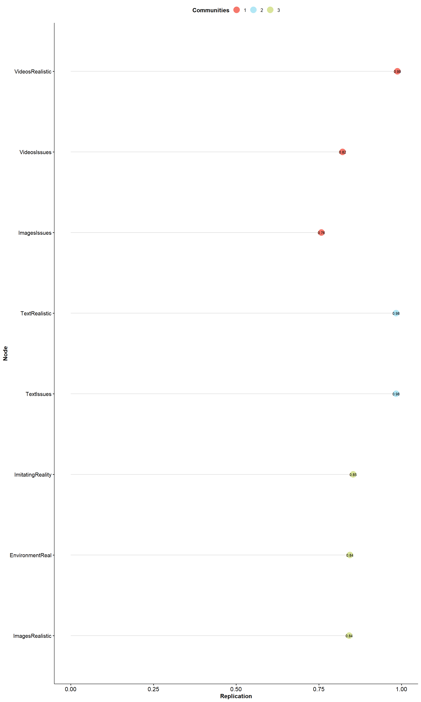
The random-intercept model converged. Wording effects likely. Results are only valid if data are [4;munrecoded[0m.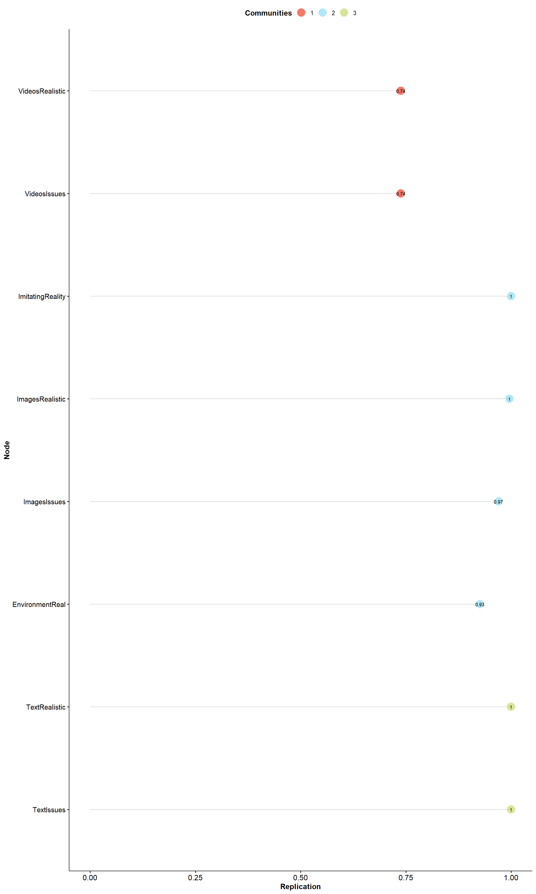
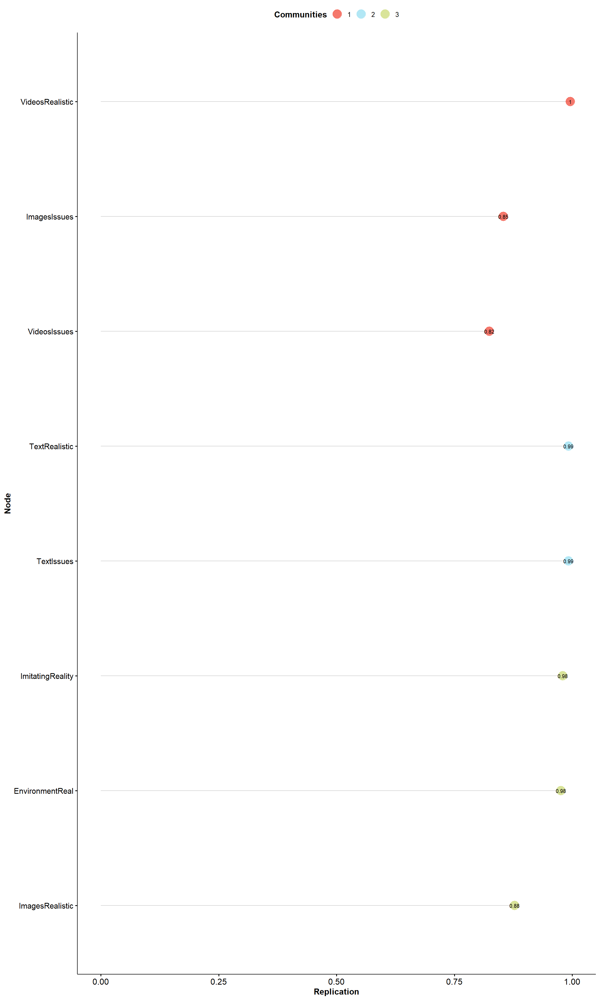
The random-intercept model converged. Wording effects likely. Results are only valid if data are [4;munrecoded[0m.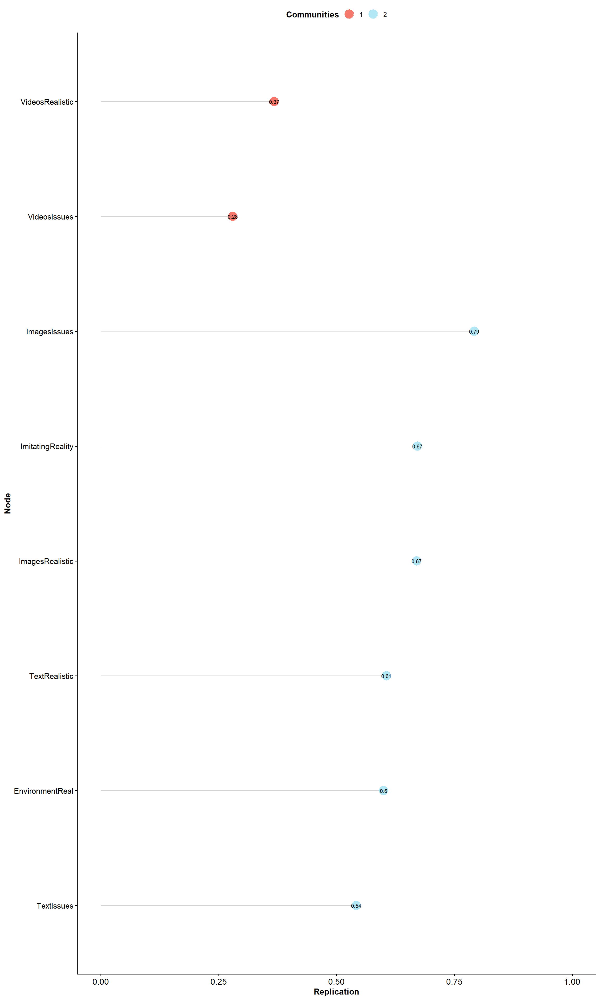
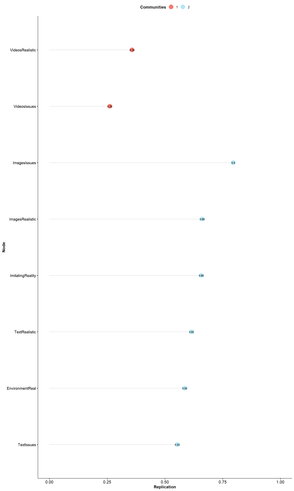
The random-intercept model converged. Wording effects likely. Results are only valid if data are [4;munrecoded[0m.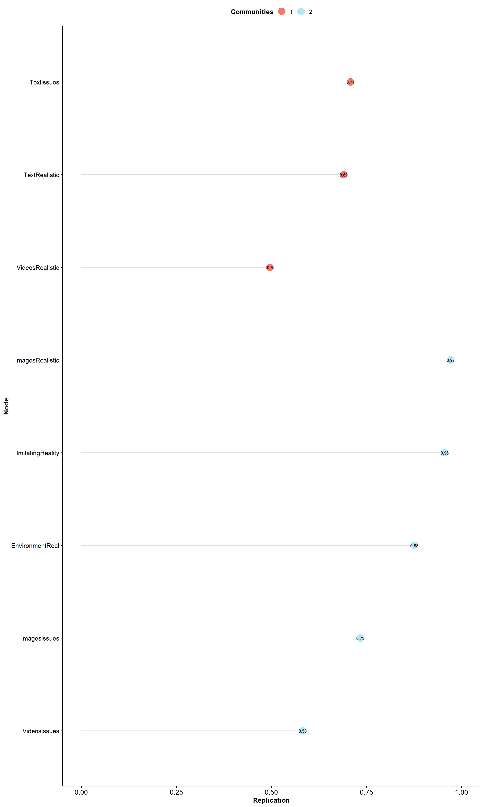
The random-intercept model converged. Wording effects likely. Results are only valid if data are [4;munrecoded[0m.EGAnet::compare.EGA.plots(
ega$glasso_walktrap_ega, ega$glasso_walktrap_ega.fit,
ega$glasso_louvain_ega, ega$TMFG_louvain_ega,
ega$glasso_louvain_riEGA, ega$glasso_walktrap_riEGA,
ega$TMFG_walktrap_ega, ega$TMFG_walktrap_ega.fit,
ega$TMFG_louvain_riEGA, ega$TMFG_walktrap_riEGA,
labels=c("glasso_walktrap_ega", "glasso_walktrap_ega.fit",
"glasso_louvain_ega", "TMFG_louvain_ega",
"glasso_louvain_riEGA", "glasso_walktrap_riEGA",
"TMFG_walktrap_ega", "TMFG_walktrap_ega.fit",
"TMFG_louvain_riEGA", "TMFG_walktrap_riEGA"),
rows=5,
plot.all = FALSE)$all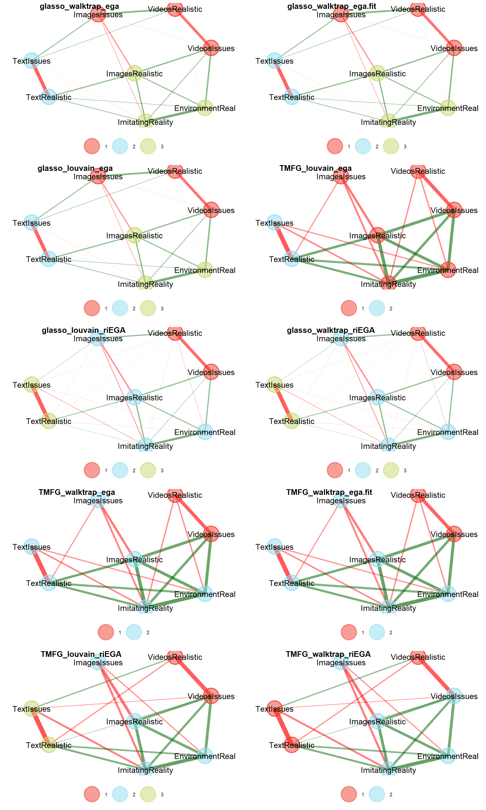
Figures shows how often each variable is replicating in their empirical structure across bootstraps.
patchwork::wrap_plots(lapply(ega, plot), nrow = 4)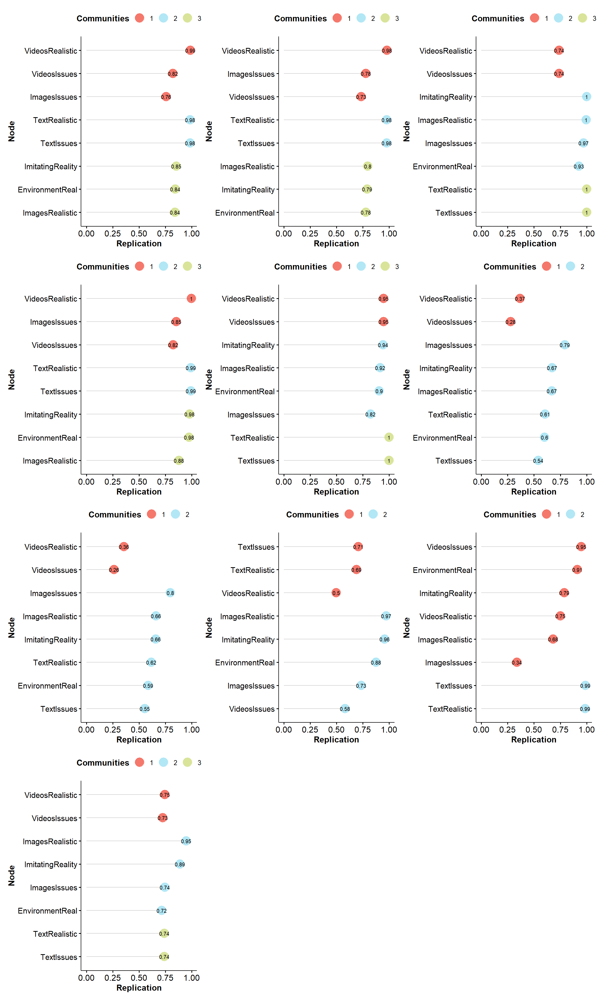
ega_final <- ega$glasso_walktrap_riEGA$EGA
plot(ega_final)
# Merge with data
ega_scores <- EGAnet::net.scores(bait, ega_final)$scores$std.scores |>
as.data.frame() |>
setNames(c("BAIT_Text_EGA", "BAIT_Visual_EGA", "BAIT_Videos_EGA")) The default 'loading.method' has changed to "revised" in {EGAnet} version >= 2.0.7.
For the previous default (version <= 2.0.6), use `loading.method = "original"`sem_scores <- lavaan::predict(m4c) |>
as.data.frame() |>
datawizard::data_addprefix("BAIT_") |>
datawizard::data_addsuffix("_SEM")
raw_scores <- data.frame(
Participant = df[!is.na(df$BAIT_1_ImagesRealistic), ]$Participant,
BAIT_Videos = (bait$VideosRealistic + (1 - bait$VideosIssues)) / 2,
BAIT_Visual = (bait$ImagesRealistic + (1 - bait$ImagesIssues) + bait$ImitatingReality + bait$EnvironmentReal) / 4,
BAIT_Text = (bait$TextRealistic + (1 - bait$TextIssues)) / 2
)
scores <- cbind(sem_scores, ega_scores, raw_scores)
df <- merge(df, raw_scores, by="Participant")We computed two type of general scores for the BAIT scale, an empirical score based on the average of observed data (of the most loading items) and a model-based score as predicted by the structural model. The first one gives equal weight to all items (and keeps the same [0-1] range), while the second one is based on the factor loadings and the covariance structure.
correlation::cor_test(scores, "BAIT_Visual", "BAIT_Visual_SEM") |>
plot() +
ggside::geom_xsidedensity(aes(x=BAIT_Visual), color="grey", linewidth=1) +
ggside::geom_ysidedensity(aes(y=BAIT_Visual_SEM), color="grey", linewidth=1) +
ggside::scale_xsidey_continuous(expand = c(0, 0)) +
ggside::scale_ysidex_continuous(expand = c(0, 0)) +
ggside::theme_ggside_void() +
theme(ggside.panel.scale = .1) While the two correlate substantially, they have different benefits. The empirical score has a more straightforward meaning and is more reproducible (as it is not based on a model fitted on a specific sample), the model-based score takes into account the relative importance of the contribution of each item to their factor.
table <- correlation::correlation(scores) |>
summary()
format(table) |>
datawizard::data_rename("Parameter", "Variables") |>
gt::gt() |>
gt::cols_align(align="center") |>
gt::tab_options(column_labels.font.weight="bold")| Variables | BAIT_Text | BAIT_Visual | BAIT_Videos | BAIT_Videos_EGA | BAIT_Visual_EGA | BAIT_Text_EGA | BAIT_Visual_SEM | BAIT_Text_SEM | BAIT_Videos_SEM | BAIT_Images_SEM |
|---|---|---|---|---|---|---|---|---|---|---|
| BAIT_Environment_SEM | 0.46*** | 0.92*** | -0.53*** | -0.46*** | 0.94*** | 0.53*** | 0.98*** | -0.58*** | 0.70*** | 0.89*** |
| BAIT_Images_SEM | 0.43*** | 0.87*** | -0.49*** | -0.43*** | 0.92*** | 0.49*** | 0.94*** | -0.56*** | 0.66*** | |
| BAIT_Videos_SEM | 0.18*** | 0.53*** | -0.91*** | -0.18*** | 0.55*** | 0.91*** | 0.76*** | -0.25*** | ||
| BAIT_Text_SEM | -0.94*** | -0.45*** | 0.19*** | 0.93*** | -0.46*** | -0.19*** | -0.64*** | |||
| BAIT_Visual_SEM | 0.52*** | 0.89*** | -0.59*** | -0.52*** | 0.92*** | 0.59*** | ||||
| BAIT_Text_EGA | 0.16*** | 0.38*** | -1.00*** | -0.16*** | 0.38*** | |||||
| BAIT_Visual_EGA | 0.34*** | 0.98*** | -0.38*** | -0.34*** | ||||||
| BAIT_Videos_EGA | -1.00*** | -0.34*** | 0.16*** | |||||||
| BAIT_Videos | -0.16*** | -0.38*** | ||||||||
| BAIT_Visual | 0.34*** |
n <- n_factors(select(df, starts_with("GAAIS")))
n# Method Agreement Procedure:
The choice of 2 dimensions is supported by 7 (43.75%) methods out of 16 (Optimal coordinates, Acceleration factor, Parallel analysis, Kaiser criterion, Scree (SE), BIC, BIC (adjusted)).parameters::factor_analysis(
select(df, starts_with("GAAIS")),
n=2,
rotation="oblimin")# Rotated loadings from Factor Analysis (oblimin-rotation)
Variable | MR1 | MR2 | Complexity | Uniqueness
---------------------------------------------------------------
GAAIS_Positive_7 | -0.02 | 0.78 | 1.00 | 0.38
GAAIS_Negative_9 | 0.49 | 0.09 | 1.06 | 0.79
GAAIS_Positive_12 | 0.10 | 0.68 | 1.04 | 0.58
GAAIS_Positive_17 | -0.21 | 0.52 | 1.33 | 0.60
GAAIS_Negative_10 | 0.79 | -9.47e-03 | 1.00 | 0.38
GAAIS_Negative_15 | 0.79 | -0.02 | 1.00 | 0.37
The 2 latent factors (oblimin rotation) accounted for 48.49% of the total variance of the original data (MR1 = 25.84%, MR2 = 22.65%).df$GAAIS_Negative <- rowMeans(select(df, starts_with("GAAIS_Negative")))
df$GAAIS_Positive <- rowMeans(select(df, starts_with("GAAIS_Positive")))table <- correlation::correlation(
select(df, all_of(names(raw_scores))),
select(df, starts_with("GAAIS")),
bayesian=TRUE) |>
summary()
format(table) |>
datawizard::data_rename("Parameter", "Variables") |>
gt::gt() |>
gt::cols_align(align="center") |>
gt::tab_options(column_labels.font.weight="bold")| Variables | GAAIS_Positive_7 | GAAIS_Negative_9 | GAAIS_Positive_12 | GAAIS_Positive_17 | GAAIS_Negative_10 | GAAIS_Negative_15 | GAAIS_Negative | GAAIS_Positive |
|---|---|---|---|---|---|---|---|---|
| BAIT_Videos | 0.13*** | -0.10** | 0.11** | 0.04 | -0.12*** | -0.18*** | -0.17*** | 0.12** |
| BAIT_Visual | 0.17*** | 0.13*** | 0.25*** | 0.17*** | -0.02 | 0.01 | 0.05 | 0.24*** |
| BAIT_Text | 0.25*** | 0.04 | 0.17*** | 0.17*** | -0.08* | -0.07 | -0.04 | 0.25*** |
dat <- df |>
select(starts_with("GAAIS"), starts_with("BAIT")) |>
select(matches("[[:digit:]]"))
ega <- EGAnet::EGA(
data = dat,
seed=123,
model="glasso",
algorithm="leiden",
plot.EGA=FALSE,
verbose=FALSE)
plot(ega)plot(parameters::factor_analysis(dat, n=6, rotation="oblimin", sort=TRUE))df |>
ggplot(aes(x=as.factor(AI_Knowledge), y=BAIT_Visual)) +
geom_boxplot()# m <- betareg::betareg(BAIT ~ AI_Knowledge, data=df)
m <- lm(BAIT_Visual ~ poly(AI_Knowledge, 2), data=df)
# m <- brms::brm(BAIT ~ mo(AI_Knowledge), data=df, algorithm = "meanfield")
# m <- brms::brm(BAIT ~ AI_Knowledge, data=dfsub, algorithm = "meanfield")
display(parameters::parameters(m))| Parameter | Coefficient | SE | 95% CI | t(695) | p |
|---|---|---|---|---|---|
| (Intercept) | 0.69 | 6.01e-03 | (0.67, 0.70) | 114.10 | < .001 |
| AI Knowledge (1st degree) | -0.10 | 0.16 | (-0.41, 0.22) | -0.61 | 0.545 |
| AI Knowledge (2nd degree) | 0.50 | 0.16 | (0.19, 0.82) | 3.18 | 0.002 |
modelbased::estimate_means(m, by=c("AI_Knowledge")) |>
as.data.frame() |>
ggplot(aes(x=AI_Knowledge, y=Mean)) +
ggdist::stat_halfeye(data=df, aes(y=BAIT_Visual), geom="slab") +
# ggdist::stat_dots(data=df, aes(y=BAIT_Visual), side="left") +
# geom_boxplot(data=df, aes(y=BAIT_Visual, group=AI_Knowledge)) +
geom_point2(data=df, aes(x=AI_Knowledge-0.08, y=BAIT_Visual), alpha=0.2, position=position_jitter(width=0.06), size=2) +
geom_line(aes(group=1), position = position_dodge(width=0.2)) +
geom_pointrange(aes(ymin = CI_low, ymax=CI_high), position = position_dodge(width=0.2)) +
theme_minimal() +
labs(x = "AI-Knowledge", y="BAIT - Visual")# m <- betareg::betareg(BAIT ~ Sex / Age, data=df, na.action=na.omit)
m <- lm(BAIT_Visual ~ Sex / Age, data=df)
display(parameters::parameters(m))| Parameter | Coefficient | SE | 95% CI | t(693) | p |
|---|---|---|---|---|---|
| (Intercept) | 0.64 | 0.03 | (0.59, 0.70) | 22.25 | < .001 |
| Sex (Male) | 0.07 | 0.04 | (-3.48e-03, 0.14) | 1.87 | 0.062 |
| Sex (Female) Age | 2.09e-03 | 1.09e-03 | (-5.59e-05, 4.23e-03) | 1.91 | 0.056 |
| Sex (Male) Age | -9.25e-04 | 6.27e-04 | (-2.16e-03, 3.05e-04) | -1.48 | 0.140 |
glm(Feedback_LabelsIncorrect ~ BAIT_Visual * AI_Knowledge,
data=mutate(df, Feedback_LabelsIncorrect = ifelse(Feedback_LabelsIncorrect=="True", 1, 0)),
family="binomial") |>
parameters::parameters() |>
display(title="Predicting 'Labels are Incorrect'")| Parameter | Log-Odds | SE | 95% CI | z | p |
|---|---|---|---|---|---|
| (Intercept) | 0.15 | 1.04 | (-1.89, 2.20) | 0.15 | 0.882 |
| BAIT Visual | -1.43 | 1.44 | (-4.29, 1.38) | -0.99 | 0.320 |
| AI Knowledge | 0.05 | 0.29 | (-0.53, 0.62) | 0.16 | 0.873 |
| BAIT Visual AI Knowledge | 0.14 | 0.40 | (-0.64, 0.94) | 0.36 | 0.721 |
glm(Feedback_LabelsReversed ~ BAIT_Visual * AI_Knowledge,
data=mutate(df, Feedback_LabelsReversed = ifelse(Feedback_LabelsReversed=="True", 1, 0)),
family="binomial") |>
parameters::parameters() |>
display(title="Predicting 'Labels are reversed'")| Parameter | Log-Odds | SE | 95% CI | z | p |
|---|---|---|---|---|---|
| (Intercept) | -3.73 | 2.10 | (-7.96, 0.26) | -1.78 | 0.075 |
| BAIT Visual | 1.61 | 2.81 | (-3.91, 7.11) | 0.57 | 0.568 |
| AI Knowledge | 0.27 | 0.59 | (-0.89, 1.43) | 0.46 | 0.646 |
| BAIT Visual AI Knowledge | -0.45 | 0.80 | (-2.00, 1.13) | -0.56 | 0.574 |
glm(Feedback_CouldDiscriminate ~ BAIT_Visual * AI_Knowledge,
data=mutate(df, Feedback_CouldDiscriminate = ifelse(Feedback_CouldDiscriminate=="True", 1, 0)),
family="binomial") |>
parameters::parameters() |>
display(title="Predicting 'Easy to discriminate'")| Parameter | Log-Odds | SE | 95% CI | z | p |
|---|---|---|---|---|---|
| (Intercept) | -1.29 | 1.85 | (-5.02, 2.24) | -0.70 | 0.485 |
| BAIT Visual | -1.47 | 2.57 | (-6.50, 3.56) | -0.57 | 0.566 |
| AI Knowledge | -0.34 | 0.54 | (-1.38, 0.72) | -0.63 | 0.530 |
| BAIT Visual AI Knowledge | 0.39 | 0.74 | (-1.06, 1.83) | 0.52 | 0.600 |
m <- glm(Feedback_CouldNotDiscriminate ~ BAIT_Visual * AI_Knowledge,
data=mutate(df, Feedback_CouldNotDiscriminate = ifelse(Feedback_CouldNotDiscriminate=="True", 1, 0)),
family="binomial")
parameters::parameters(m) |>
display(title="Predicting 'Hard to discriminate'")| Parameter | Log-Odds | SE | 95% CI | z | p |
|---|---|---|---|---|---|
| (Intercept) | -4.39 | 1.18 | (-6.77, -2.13) | -3.72 | < .001 |
| BAIT Visual | 6.48 | 1.62 | (3.39, 9.75) | 4.00 | < .001 |
| AI Knowledge | 0.46 | 0.33 | (-0.17, 1.11) | 1.41 | 0.158 |
| BAIT Visual AI Knowledge | -0.85 | 0.45 | (-1.74, 0.01) | -1.91 | 0.056 |
modelbased::estimate_relation(m, length=6) |>
plot()
glm(Feedback_Fun ~ BAIT_Visual * AI_Knowledge,
data=mutate(df, Feedback_Fun = ifelse(Feedback_Fun=="True", 1, 0)),
family="binomial") |>
parameters::parameters() |>
display(title="Predicting 'Fun'")| Parameter | Log-Odds | SE | 95% CI | z | p |
|---|---|---|---|---|---|
| (Intercept) | -0.06 | 1.02 | (-2.07, 1.96) | -0.06 | 0.956 |
| BAIT Visual | 0.47 | 1.41 | (-2.28, 3.24) | 0.34 | 0.737 |
| AI Knowledge | 0.01 | 0.29 | (-0.56, 0.58) | 0.03 | 0.972 |
| BAIT Visual AI Knowledge | 0.07 | 0.40 | (-0.72, 0.85) | 0.17 | 0.865 |
glm(Feedback_Boring ~ BAIT_Visual * AI_Knowledge,
data=mutate(df, Feedback_Boring = ifelse(Feedback_Boring=="True", 1, 0)),
family="binomial") |>
parameters::parameters() |>
display(title="Predicting 'Boring'")| Parameter | Log-Odds | SE | 95% CI | z | p |
|---|---|---|---|---|---|
| (Intercept) | -1.78 | 1.36 | (-4.48, 0.85) | -1.31 | 0.191 |
| BAIT Visual | -0.27 | 1.88 | (-3.98, 3.42) | -0.14 | 0.886 |
| AI Knowledge | 0.17 | 0.37 | (-0.56, 0.90) | 0.45 | 0.650 |
| BAIT Visual AI Knowledge | -0.07 | 0.52 | (-1.08, 0.95) | -0.13 | 0.899 |
glm(Feedback_AILessArousing ~ BAIT_Visual * AI_Knowledge,
data=mutate(df, Feedback_AILessArousing = ifelse(Feedback_AILessArousing=="True", 1, 0)),
family="binomial") |>
parameters::parameters() |>
display(title="Predicting 'AI was less arousing'")| Parameter | Log-Odds | SE | 95% CI | z | p |
|---|---|---|---|---|---|
| (Intercept) | 1.26 | 1.57 | (-1.84, 4.33) | 0.80 | 0.423 |
| BAIT Visual | -5.12 | 2.36 | (-9.83, -0.57) | -2.17 | 0.030 |
| AI Knowledge | -0.49 | 0.45 | (-1.36, 0.38) | -1.10 | 0.273 |
| BAIT Visual AI Knowledge | 0.72 | 0.66 | (-0.56, 2.02) | 1.10 | 0.272 |
glm(Feedback_AIMoreArousing ~ BAIT_Visual * AI_Knowledge,
data=mutate(df, Feedback_AIMoreArousing = ifelse(Feedback_AIMoreArousing=="True", 1, 0)),
family="binomial") |>
parameters::parameters() |>
display(title="Predicting 'AI was more arousing'")| Parameter | Log-Odds | SE | 95% CI | z | p |
|---|---|---|---|---|---|
| (Intercept) | -2.95 | 1.73 | (-6.45, 0.33) | -1.71 | 0.088 |
| BAIT Visual | 1.16 | 2.26 | (-3.22, 5.65) | 0.51 | 0.609 |
| AI Knowledge | -0.23 | 0.49 | (-1.18, 0.73) | -0.47 | 0.639 |
| BAIT Visual AI Knowledge | 0.35 | 0.63 | (-0.89, 1.59) | 0.56 | 0.577 |
setdiff(unique(df$Participant), unique(dftask$Participant))character(0)write.csv(df, "../data/data_participants.csv", row.names = FALSE)
write.csv(dftask, "../data/data.csv", row.names = FALSE)
Comments
Code